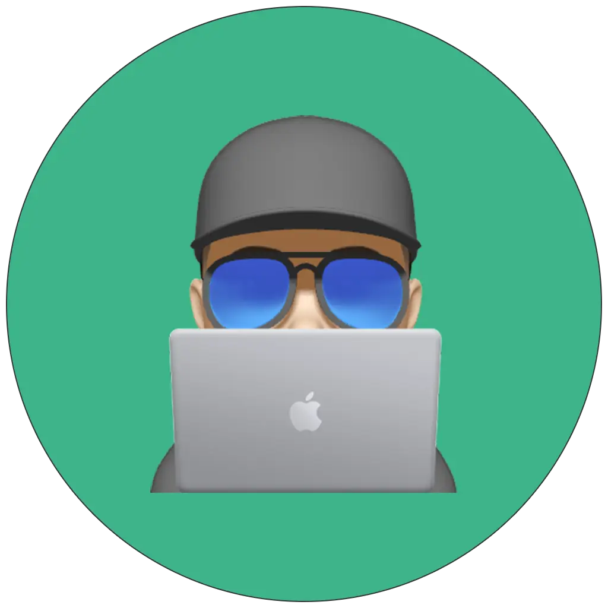

Kurumsal marka sitesi
Premium algı, net mesaj ve yüksek dönüşüm için tasarlanmış çok bölümlü bir kurumsal web sitesi. İçerik akışı sadeleştirildi, sayfa hızı ve mobil deneyim iyileştirildi.

Berk Babadoğanİnsanların gerçekten kullanmak istediği dijital deneyimler tasarlıyorum. Net yapı, güçlü görsel kimlik ve hızlı performans benim için aynı masada oturur. Bu portfolyo; seçili işlerimi, yaklaşımımı ve birlikte neler üretebileceğimizi anlatıyor.
Farklı ölçeklerdeki işlerden birkaç örnek. Her biri, tasarım kararlarının sadece güzel görünmek için değil, kullanım kalitesi için verildiği işler.
Premium algı, net mesaj ve yüksek dönüşüm için tasarlanmış çok bölümlü bir kurumsal web sitesi. İçerik akışı sadeleştirildi, sayfa hızı ve mobil deneyim iyileştirildi.
Yoğun veriyi anlaşılır bir yapıya dönüştüren, odaklanmayı kolaylaştıran modüler bir yönetim paneli.
Kendi işlerini güçlü bir hikaye ile sunmak isteyen yaratıcılar için kurulan karakterli bir kişisel portfolyo yapısı.
Tek mesajı güçlü biçimde taşıyan, görsel ritmi yüksek ve hızlı yüklenen kampanya sayfası. Sosyal paylaşım ve CTA akışı göz önünde tutuldu.
GitHub profilinde görünen repo sayısı, yıldızlar, takipçiler ve öne çıkan depolar.
GitHub’da görünen herkese açık tüm repolar: paket kütüphaneleri, site deposu ve tema çalışmaları.
pub.dev ve NuGet profillerinde yayınlanan paketler ve yayıncı sayfaları.
Verified publisher on pub.dev with four Dart packages: dart_encrypter, logbox_color, tcid_checker, and isbn_searcher.
NuGet profile with four .NET packages: TCIDChecker_NET, ColorLogger_NET, Encrypter_NET, and ISBNSearcher_NET.
The publisher page lists 4 packages and shows the verified publisher badge for berk.babadogan.net.
The NuGet profile shows 4 packages and 7,318 total downloads.
Tasarımın, geliştirme kadar ürün düşüncesiyle de ilerlemesi gerektiğine inanıyorum. Bu yüzden görsel estetikle işlevselliği birlikte kuruyorum.
Bileşen bazlı düşünür, düzen, tipografi ve boşluklarla yüksek okunabilirlik kurarım.
Statik sitelerden etkileşimli deneyimlere kadar temiz, hızlı ve bakım dostu yapı kurarım.
Kullanıcıya ne sunduğunuzu birkaç saniyede net anlatan sayfa akışları oluştururum.
Güçlü bir portfolyo sadece projelerden ibaret değildir; nasıl düşündüğünüzü de göstermelidir.
Kişisel markalar, kurumsal tanıtım siteleri ve ürün odaklı arayüzler için konseptten yayına kadar uçtan uca çalışmalar.
Tasarım sistemi, kullanım akışı ve içerik yapısı üzerinden kararları sadeleştirip uygulamaya dönüştürme.
Sitede gördüğünüz yaklaşım; düzenli denemeler, küçük iyileştirmeler ve kullanıcı odaklı düşünme alışkanlığının bir sonucu.
Yüksek Lisans - Yazılım Mühendisliği
Lisans - Bilgisayar Mühendisliği
İlk, orta ve lise eğitimi
Yeni bir siteye, ürün lansmanına veya markanı daha güçlü anlatacak bir portfolyo yapısına ihtiyacın varsa, buradan başlayabiliriz.